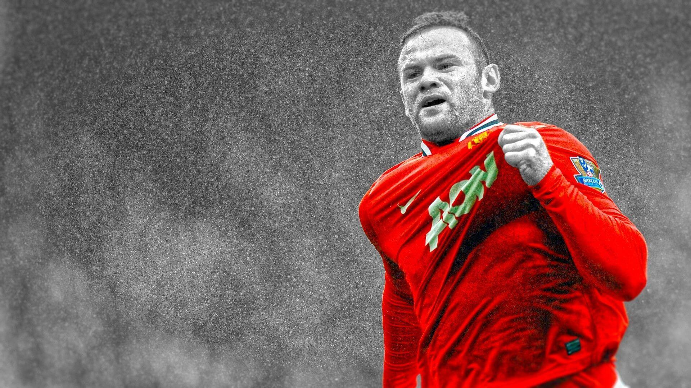

Wayne Rooney
"The legend of Manchester United"

Wayne Rooney is an English professional footballer who plays for Premier League club Everton and captains the England national team.
Career statistics:
Everton
- 2002–03 (37 Apps, 8 Goals)
Everton
- 2003–04 (40 Apps, 9 Goals)
Manchester United
- 2004–05 (43 Apps, 17 Goals)
Manchester United
- 2005–06 (48 Apps, 19 Goals)
Manchester United
- 2006–07 (55 Apps, 23 Goals)
Manchester United
- 2007–08 (43 Apps, 18 Goals)
Manchester United
- 2008–09 (49 Apps, 20 Goals)
Manchester United
- 2009–10 (44 Apps, 34 Goals)
Manchester United
- 2010–11 (40 Apps, 16 Goals)
Manchester United
- 2011–12 (43 Apps, 34 Goals)
Manchester United
- 2012–13 (37 Apps, 16 Goals)
Manchester United
- 2013–14 (40 Apps, 19 Goals)
Manchester United
- 2014–15 (37 Apps, 14 Goals)
Manchester United
- 2015–16 (41 Apps, 15 Goals)
Manchester United
- 2016–17 (39 Apps, 8 Goals)
Everton
- 2017–18 (5 Apps, 2 Goals)
"International team: As of match played 11 November 2016 - 119 Apps and 53 Goals"
You can read about Wayne Rooney
here